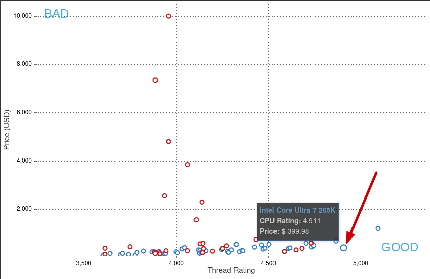
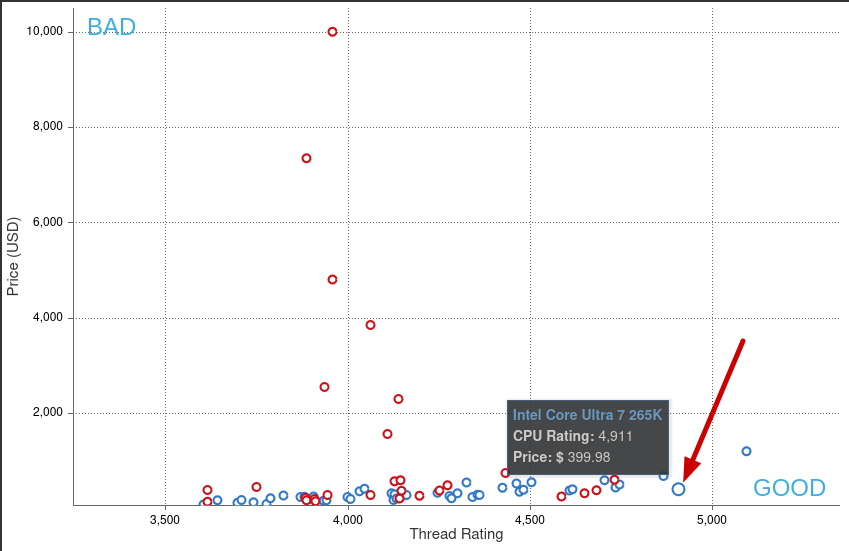

Purpose
The main goal of this build is to make a custom engineering workstation that is appropriate for Scientific Computing (MATLAB), CAD (SolidWorks, OnShape, AutoDesk products, etc), FEA (Code_Aster, Calculix, LISA, etc), CFD (OpenFoam, Code_Saturne, Code_Syrthes), video encoding (AV1, h.265, h.266), and computer vision. It will dual boot Windows and Linux.
The rest of what follows is my design rationale for my choices.
Notes
I am using PCPartPicker.com to configure the build, Engineering Build 2025. I am using passmark.com to compare different parts. Part benchmarks can be found linked in the Details from this page, Engineering Build 2025. Below is the part list, what I paid (2025-Feb-01 purchase), and where I bought each part.
| Type | Item | Price |
|---|---|---|
| CPU | Intel Core Ultra 7 265K 3.9 GHz 20-Core Processor | $372.03 @ Amazon |
| CPU Cooler | NZXT Kraken 240 78.02 CFM Liquid CPU Cooler | $139.99 @ Amazon |
| Motherboard | MSI MAG Z890 TOMAHAWK WIFI ATX LGA1851 Motherboard | $239.99 @ Amazon |
| Memory | Corsair Vengeance 96 GB (2 x 48 GB) DDR5-5600 CL40 Memory | $249.99 @ Amazon |
| Memory | Corsair Vengeance 96 GB (2 x 48 GB) DDR5-5600 CL40 Memory | $249.99 @ Amazon |
| Storage | Crucial T700 W/Heatsink 1 TB M.2-2280 PCIe 5.0 X4 NVME Solid State Drive | $162.99 @ Amazon |
| Storage | Crucial T700 W/Heatsink 1 TB M.2-2280 PCIe 5.0 X4 NVME Solid State Drive | $162.99 @ Amazon |
| Video Card | PNY VCQRTX4000-PB Quadro RTX 4000 8 GB Video Card | $384.99 @ Amazon |
| Case | NZXT H9 Flow (2023) ATX Mid Tower Case | $149.99 @ Amazon |
| Power Supply | Corsair RM1000e (2023) 1000 W 80+ Gold Certified Fully Modular ATX Power Supply | $179.99 @ Amazon |
| Subtotal | $2291.95 | |
| Taxes | $155.75 | |
| Total | $2447.70 |
I benchmarked my 2015 workstation and my linux laptop. Here are the results:


Both computers are outdated compared to what is available.
CPU
Single CPU XY Scatter Graph and Single Thread XY Scatter Graph to identify processor that balance price and speed. The graphs are shown below for convenience.
 

2025-12-06 Benchmark Update
After setup, I ran PassMark PerformanceTest 11 to benchmark the system.

The new workstation is 30x faster than the 2015 workstation and 6x faster than my linux laptop.